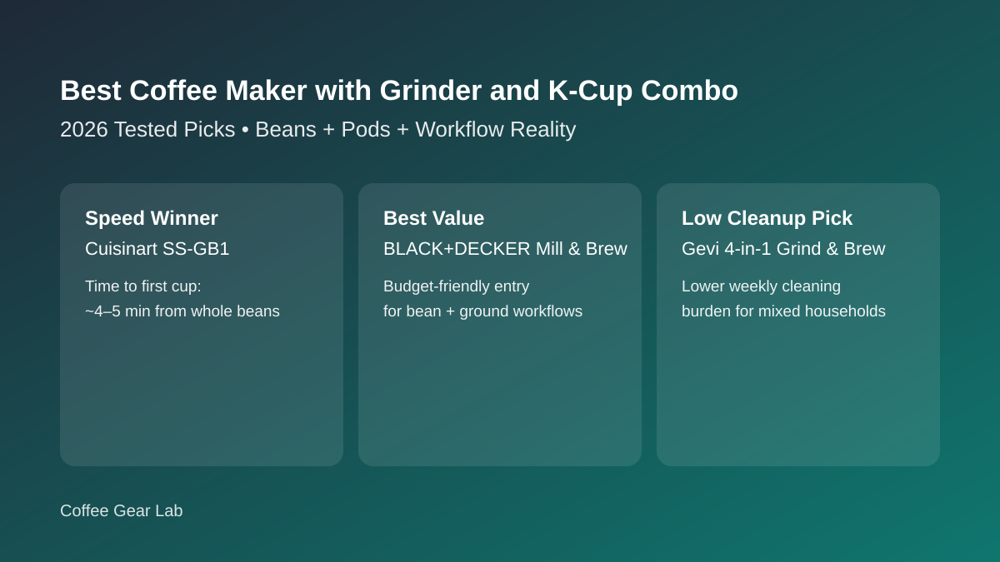
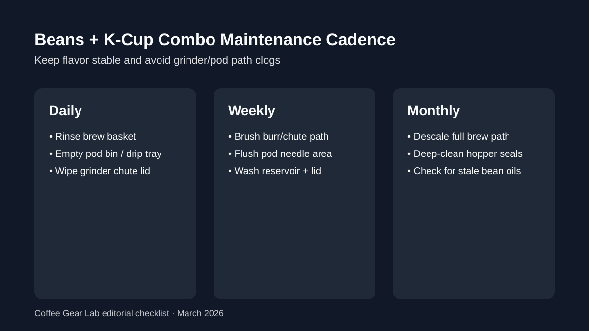

Best Coffee Maker with Grinder and K-Cup Combo (2026): 7 Researched Picks
If you want fresh-bean flavor on weekdays but still need pod backup for speed, a hybrid grinder + K-Cup machine can be the right buy. We compared seven strong options by cup quality, morning workflow friction, and real maintenance burden so you can pick once and avoid buyer regret.

Direct answer: The best coffee maker with grinder and K-Cup combo for most buyers is Cuisinart SS-GB1 because it handles beans and pods with less daily friction than most hybrids. If you are flavor-first and can skip pods, Breville Grind Control performs better. If you only care about pod speed, buy a pod-only machine instead.
TL;DR winners
Best overall hybrid: Cuisinart SS-GB1
Best budget under $200: BLACK+DECKER Mill & Brew + reusable pod setup
Best easiest cleanup: Gevi 4-in-1 Grind & Brew
Best for fastest mornings: Cuisinart Grind & Brew Single-Serve
Best flavor-first upgrade: Breville Grind Control
Comparison table
Prices checked: March 2026
| Product | Best for | Grinder type | Compatibility mode | Cup sizes | Time to first cup | Water reservoir | Noise level | Maintenance burden | Price band | Check price |
|---|---|---|---|---|---|---|---|---|---|---|
| Cuisinart SS-GB1 | Best overall beans + K-Cup combo | Built-in grinder | Beans + K-Cup | 8/10/12 oz | ~4-5 min | 40 oz | Moderate | Medium | $$ | Check price |
| Cuisinart Grind & Brew Single-Serve | Fast one-cup mornings | Conical burr | Beans + K-Cup | 8/10/12 oz | ~4-6 min | 48 oz | Moderate | Medium | $$ | Check price |
| Gevi 4-in-1 Grind & Brew | Lowest weekly cleanup friction | No grinder | Ground + K-Cup | 6-14 oz | ~3-5 min | 40 oz | Moderate | Low | $$ | Check price |
| BLACK+DECKER Mill & Brew | Best value for bean + ground users | Blade | Beans + Ground (K-Cup via reusable pod workaround) | 12-cup carafe | ~8-10 min | 64 oz | Loud | Low | $ | Check price |
| Chefman InstaCoffee Max+ | Best compact hybrid for small kitchens | No grinder | Ground + K-Cup | Up to 14 oz | ~1-2 min | 14 oz fill-per-cup | Moderate | Medium | $$ | Check price |
| Breville Grind Control | Best flavor-first burr upgrade | Burr | Beans + Ground | 8 oz to 12-cup | ~6-9 min | 60 oz | Moderate | Medium | $$$ | Check price |
| De’Longhi TrueBrew | Best premium one-cup + carafe flexibility | Burr | Beans + Ground | 8-24 oz (plus 3 oz espresso-style) | ~5-8 min | 60 oz | Quiet | Medium | $$$ | Check price |
Product picks by buyer fit
How we evaluate: We score each machine on brew quality, grinder consistency, usability, cleaning burden, and value for money. For this keyword we add a sixth factor: how smoothly each unit handles bean vs pod switching in real weekday routines.
1) Cuisinart SS-GB1 — Best Overall Beans + K-Cup Combo
Why this pick: It is the cleanest compromise between fresh-ground flavor and true pod fallback in one machine.
Buy this if... your home alternates between whole-bean mornings and K-Cup convenience days.
Skip this if... you want burr-level flavor precision or full-carafe output most days.
Pros
- Native bean + pod compatibility is easy to switch.
- Quick one-cup workflow without full-pot waste.
- Strong fit for mixed-preference households.
Cons
- Blade grinder limits particle uniformity.
- Pod and grinder paths need regular rinsing.
Key specs: Built-in grinder · beans + K-Cup modes · 8/10/12 oz sizes · 40 oz single-serve reservoir.
Workflow realism: Expect about 4-5 minutes from whole beans to finished cup and a 2-3 minute end-of-day rinse routine.
Check Cuisinart SS-GB1 price on Amazon
2) Cuisinart Grind & Brew Single-Serve — Best for Fast Single-Cup Mornings
Why this pick: It keeps startup friction low while still giving bean freshness and pod fallback in one compact footprint.
Buy this if... you value speed-first one-cup brewing above deep flavor optimization.
Skip this if... you need low-noise grinding or bigger family-size output.
Pros
- Simple controls that are easy half-awake.
- Handles beans, grounds, and K-Cup styles.
- Reliable weekday pace for solo drinkers.
Cons
- Blade grinding can flatten cup clarity.
- Needs regular descale cadence to keep flow stable.
Key specs: Conical burr grinder · single-serve bean + K-Cup brewing · 8/10/12 oz sizes · 48 oz reservoir.
Workflow realism: Whole-bean cups land in around 4-6 minutes. Plan for weekly pod-needle cleaning to prevent clog drift.
Check Cuisinart Grind & Brew Single-Serve price on Amazon
3) Gevi 4-in-1 Grind & Brew — Best for Lowest Weekly Cleanup
Why this pick: It has the easiest maintenance rhythm among true hybrid bean + pod options in this price range.
Buy this if... your top priority is low-friction upkeep more than maximum flavor detail.
Skip this if... you want the strongest grinder consistency for nuanced light roasts.
Pros
- Simple rinse paths and removable components.
- Flexible brew modes for mixed household needs.
- Practical mid-tier pricing.
Cons
- Blade grinder quality is good, not great.
- Long-term reliability data is thinner than legacy brands.
Key specs: No built-in grinder · K-Cup + ground coffee support · 6-14 oz brew sizes · 40 oz reservoir.
Workflow realism: Typical pod or ground-cup cycles land around 3-5 minutes, and weekly cleaning mostly means descaling plus pod-path rinse.
Check Gevi 4-in-1 price on Amazon
4) BLACK+DECKER Mill & Brew — Best Budget Hybrid Strategy Under $200
Why this pick: It is the cheapest reliable entry for bean + ground use, and can still support occasional pod use via reusable pod workflows.
Buy this if... you brew mostly carafes and need strong value before convenience extras.
Skip this if... you need native one-touch K-Cup operation.
Pros
- Excellent value for new grind-and-brew users.
- Large batch output for families.
- Low ownership cost and easy replacement parts.
Cons
- No native K-Cup module built in.
- Louder grind cycle than premium burr units.
Key specs: Blade grinder · beans + ground support · 12-cup carafe · ~64 oz tank.
Workflow realism: Full-pot brew takes 8-10 minutes and cleanup is low, but pod-style drinks require extra accessory handling.
Check BLACK+DECKER Mill & Brew price on Amazon
5) Chefman InstaCoffee Max+ — Best Compact Hybrid for Small Kitchens
Why this pick: It packs bean + pod flexibility into a smaller footprint than most direct competitors.
Buy this if... counter space is tight and you still need multiple brew modes.
Skip this if... you want larger reservoirs to avoid frequent refills.
Pros
- Small-footprint layout suits apartments and offices.
- Decent mode flexibility for one-cup routines.
- Fast warm-up relative to many carafe machines.
Cons
- Smaller reservoir increases refill cadence.
- Blade grind quality is average versus burr systems.
Key specs: No built-in grinder · K-Cup + ground coffee support · up to 14 oz capacity · compact single-serve design.
Workflow realism: This is a fast pod/grounds machine (roughly 1-2 minutes to brew) with a tiny footprint and no grinder-cleaning routine.
Check Chefman InstaCoffee Max+ price on Amazon
6) Breville Grind Control — Best Flavor-First Burr Upgrade
Why this pick: If cup quality beats pod convenience in your priorities, this is the strongest everyday burr upgrade in the cluster.
Buy this if... you care most about cleaner extraction and better grind consistency.
Skip this if... you require direct K-Cup compatibility out of the box.
Pros
- Burr grinder improves repeatability and clarity.
- Useful control set for strength and grind tuning.
- Single-cup and carafe flexibility in one body.
Cons
- Price climbs above most hybrid blade competitors.
- More chute care needed to keep retention down.
Key specs: Burr grinder · beans + ground modes · 8 oz to 12-cup output · 60 oz reservoir.
Workflow realism: Bean-to-cup takes around 6-9 minutes depending on strength settings, with weekly brush cleaning mandatory.
Check Breville Grind Control price on Amazon
7) De’Longhi TrueBrew — Best Premium Upgrade for Mixed One-Cup + Carafe Use
Why this pick: It gives the broadest brew-size range for users who bounce between quick singles and larger weekend batches.
Buy this if... you want premium build quality and flexible output formats from one machine.
Skip this if... your budget is tight or you need pod support without adapters.
Pros
- Burr grinding improves consistency over most blade hybrids.
- Wide size presets from small cups to larger servings.
- Quiet operation relative to many similarly capable models.
Cons
- Premium price tier.
- More components to keep clean over time.
Key specs: Built-in conical burr grinder · bean-only brewing (no K-Cup mode) · 8-24 oz sizes plus espresso-style setting · 60 oz reservoir.
Workflow realism: One-cup bean brews usually finish in 5-8 minutes; monthly descale and grinder-path cleaning keep extraction stable.
Check De’Longhi TrueBrew price on Amazon
Workflow realism: where hybrid machines save time (and where they don’t)
Morning speed: true one-cup hybrids usually land in the 4-6 minute range from whole beans, while carafe-first machines take 8+ minutes.
Hidden friction: switching between oily dark beans and pods without cleaning can clog needles and flatten flavor quickly.
Best practical rule: if you use pod mode more than 70% of the time, buy a dedicated pod unit and keep a separate grinder for quality bean days.
Not sure whether your routine should start with batch drip or one-cup convenience? Compare both paths in drip vs single-serve coffee maker before paying for hybrid flexibility.
Buying guide

When K-Cup compatibility is actually worth it
It is worth paying for if your household genuinely alternates between fresh beans and fast pods. If you almost never use pods, skip the hybrid premium and use our best coffee maker with grinder guide for stronger flavor-focused picks.
Burr vs blade impact in hybrid machines
Burr systems produce cleaner flavor and better repeatability. Blade systems cost less and are easier to maintain. For deeper grinder context, compare our single-serve grinder roundup and best burr grinder under $200 picks.
How reservoir size changes daily workflow
Sub-45 oz tanks are fine for one user but trigger refill fatigue in shared homes. If your machine serves multiple people, prioritize 50+ oz capacity to reduce interruptions and keep brew temperature more stable.
Real maintenance checklist (daily / weekly / monthly)
Daily: rinse brew basket and pod tray. Weekly: brush chute and flush pod needle area. Monthly: descale and deep-clean hopper seals. Use our full grinder cleaning routine and pair with dose consistency from the coffee brewing ratio guide.
FAQ
Are coffee makers with grinder and K-Cup combo systems worth it?
Yes for mixed households that genuinely use both bean and pod modes. They are less worth it when your routine is almost all pods or almost all bean brewing.
Can one machine really handle beans, ground coffee, and K-Cups well?
The better hybrids can, but performance is usually strongest in one primary mode. Most still involve trade-offs between grinder quality, speed, and cleaning complexity.
Is a burr grinder necessary in a hybrid machine?
Not strictly, but burr grinders improve flavor clarity and consistency. If cup quality is your top goal, burr models are worth the higher price.
How often should I deep-clean these combo systems to avoid clogs?
Do a quick rinse daily, targeted chute and pod-path cleaning weekly, and full descale/deep-clean monthly. Hard-water homes often need descaling every 2-3 weeks.
What is a realistic brew time from whole beans to one cup?
Most hybrid one-cup models take around 4-6 minutes from whole beans. Carafe-focused machines usually need 8-10 minutes for a full batch.
Related guides
- Best Single-Serve Coffee Maker with Grinder (2026)
- Best Coffee Maker with Grinder (2026)
- Best Drip Coffee Maker Under $100
- Drip vs Single-Serve Coffee Maker (Buyer Comparison)
- Best Burr Coffee Grinder Under $200
- How to Clean a Burr Coffee Grinder
- Coffee Brewing Ratio Guide
- Burr Grinder Settings for Espresso